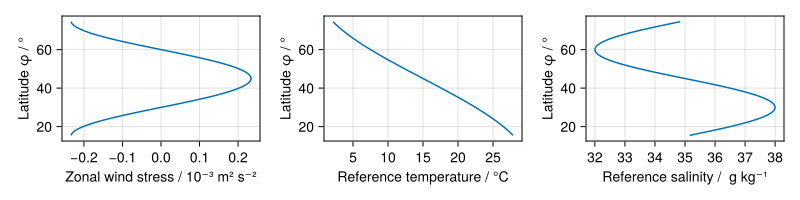
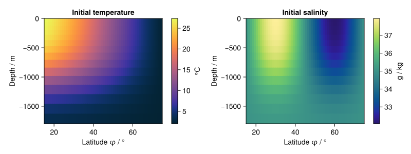

GyreInABox
Documentation for GyreInABox.
Model details
The model is an adaptation of the baroclinic gyre example from the MITgcm documentation. It simulates a wind and buoyancy forced double-gyre ocean circulation on a spherical shell sector spatial domain, with default domain extents $(0^\circ, 60^\circ) \times (15^\circ, 75^\circ) \times (-1800\textsf{m}, 0\textsf{m})$ (longitude × latitude × depth dimensions).
By default a non-linear TEOS-10 polynomial equation of state is used to compute buoyancy from salinity and temperature fields. No slip / no-flux boundary conditions are applied to the velocity fields on all walls, and a boundary condition corresponding to a damping zonal drag on the bottom surface. The zonal velocity component is subject to a latitude dependent wind stress roughly reflecting average zonal wind patterns at the surface. The temperature and salinity fields have no-flux boundary conditions applied on all walls and the bottom surface, and relaxation boundary conditions on the top surface which restore the surface fields towards a latitude dependent reference temperature / salinity with a parameterized relaxation time. The surface wind stress, reference temperature and reference salinity as a function of latitude are shown in the figure below.

The model is initialised from rest (zero velocity). The temperature and salinity fields are initialised to match the reference temperature and salinity at the surface and following smoothly varying thermocline / halocline like profiles with depth, and constant in longitude, as shown in the figure below.

Usage example
The below example illustrates setting up and running a simulation of the model with the default parameter values and configuration modulo changing the model to record only a horizontal (surface) slice and depth slice along longitude axis as outputs, and decreasing the progress message update frequency. The resulting horizontal and depth slices of simulated fields are recorded as an animation using CairoMakie. A coarse default grid size (60 × 60 × 15) and small simulation time (60 days) are set so as to allow a simulation to run in around 5 minutes on a CPU, but if running on a GPU (controlled by architecture keyword argument to SimulationConfiguration) then finer spatial discretizations and longer simulation times can easily be used.
using Oceananigans.Units
using GyreInABox
parameters = DoubleGyreParameters()
configuration = SimulationConfiguration(
output_types=(LongitudeDepthSlice(), HorizontalSlice()),
progress_message_interval=400
)
run_simulation(parameters, configuration)
record_animations(parameters, configuration)[ Info: Initializing simulation...
Iteration: 0000, time: 0 seconds, Δt: 15 minutes, wall time: 0 seconds
max(|u|) = 0.00e+00 m s⁻¹, max(|v|) = 0.00e+00 m s⁻¹, max(|w|) = 0.00e+00 m s⁻¹, max(|T|) = 2.73e+01 °C, max(|S|) = 3.79e+01 g kg⁻¹, max(|e|) = 0.00e+00 m² s⁻²
[ Info: ... simulation initialization complete (35.855 seconds)
[ Info: Executing initial time step...
[ Info: ... initial time step complete (38.258 seconds).
Iteration: 0400, time: 8.167 days, Δt: 30 minutes, wall time: 1.812 minutes
max(|u|) = 8.67e-01 m s⁻¹, max(|v|) = 1.62e+00 m s⁻¹, max(|w|) = 2.75e-03 m s⁻¹, max(|T|) = 2.75e+01 °C, max(|S|) = 3.80e+01 g kg⁻¹, max(|e|) = 2.38e-03 m² s⁻²
Iteration: 0800, time: 16.500 days, Δt: 30 minutes, wall time: 2.326 minutes
max(|u|) = 1.05e+00 m s⁻¹, max(|v|) = 2.30e+00 m s⁻¹, max(|w|) = 3.34e-03 m s⁻¹, max(|T|) = 2.82e+01 °C, max(|S|) = 3.81e+01 g kg⁻¹, max(|e|) = 5.46e-03 m² s⁻²
Iteration: 1200, time: 24.833 days, Δt: 30 minutes, wall time: 2.838 minutes
max(|u|) = 1.58e+00 m s⁻¹, max(|v|) = 2.29e+00 m s⁻¹, max(|w|) = 3.78e-03 m s⁻¹, max(|T|) = 3.31e+01 °C, max(|S|) = 3.89e+01 g kg⁻¹, max(|e|) = 7.24e-03 m² s⁻²
Iteration: 1600, time: 33.167 days, Δt: 30 minutes, wall time: 3.351 minutes
max(|u|) = 2.52e+00 m s⁻¹, max(|v|) = 2.95e+00 m s⁻¹, max(|w|) = 4.27e-03 m s⁻¹, max(|T|) = 3.83e+01 °C, max(|S|) = 3.96e+01 g kg⁻¹, max(|e|) = 5.26e-03 m² s⁻²
Iteration: 2000, time: 41.500 days, Δt: 30 minutes, wall time: 3.861 minutes
max(|u|) = 2.24e+00 m s⁻¹, max(|v|) = 2.38e+00 m s⁻¹, max(|w|) = 4.17e-03 m s⁻¹, max(|T|) = 3.63e+01 °C, max(|S|) = 4.03e+01 g kg⁻¹, max(|e|) = 6.72e-03 m² s⁻²
Iteration: 2400, time: 49.833 days, Δt: 30 minutes, wall time: 4.368 minutes
max(|u|) = 1.59e+00 m s⁻¹, max(|v|) = 2.21e+00 m s⁻¹, max(|w|) = 2.35e-03 m s⁻¹, max(|T|) = 3.16e+01 °C, max(|S|) = 4.00e+01 g kg⁻¹, max(|e|) = 3.62e-03 m² s⁻²
Iteration: 2800, time: 58.167 days, Δt: 30 minutes, wall time: 4.878 minutes
max(|u|) = 1.76e+00 m s⁻¹, max(|v|) = 2.09e+00 m s⁻¹, max(|w|) = 1.99e-03 m s⁻¹, max(|T|) = 3.41e+01 °C, max(|S|) = 4.06e+01 g kg⁻¹, max(|e|) = 3.67e-03 m² s⁻²
[ Info: Simulation is stopping after running for 4.990 minutes.
[ Info: Simulation time 60 days equals or exceeds stop time 60 days.
[ Info: Recording an animation of longitude_depth_slice_at_latitude_45.0deg to gyre_model_longitude_depth_slice_at_latitude_45.0deg.mp4...
Plotting frame 10 of 61
Plotting frame 20 of 61
Plotting frame 30 of 61
Plotting frame 40 of 61
Plotting frame 50 of 61
Plotting frame 60 of 61
[ Info: Recording an animation of horizontal_slice_at_depth_0.0m to gyre_model_horizontal_slice_at_depth_0.0m.mp4...
Plotting frame 10 of 61
Plotting frame 20 of 61
Plotting frame 30 of 61
Plotting frame 40 of 61
Plotting frame 50 of 61
Plotting frame 60 of 61
API reference
GyreInABox.GyreInABoxGyreInABox.AbstractParametersGyreInABox.BarotropicStreamFunctionGyreInABox.DepthAveragedGyreInABox.DoubleGyreParametersGyreInABox.FreeSurfaceFieldsGyreInABox.HorizontalSliceGyreInABox.LatitudeDepthSliceGyreInABox.LongitudeDepthSliceGyreInABox.MOCStreamFunctionGyreInABox.SimulationConfigurationGyreInABox.Spall2011ParametersGyreInABox.XDepthSliceGyreInABox.YDepthSliceGyreInABox.add_output_writers!GyreInABox.add_progress_message_callback!GyreInABox.axis_aspect_ratioGyreInABox.axis_limitsGyreInABox.axis_xlabelGyreInABox.axis_ylabelGyreInABox.bottom_meridional_dragGyreInABox.bottom_zonal_dragGyreInABox.boundary_conditionsGyreInABox.buoyancyGyreInABox.closureGyreInABox.coriolisGyreInABox.forcingGyreInABox.gridGyreInABox.hyperbolically_spaced_facesGyreInABox.indicesGyreInABox.initial_salinityGyreInABox.initial_temperatureGyreInABox.initialize!GyreInABox.labelGyreInABox.max_surface_wind_stressGyreInABox.momentum_advectionGyreInABox.output_filenameGyreInABox.outputsGyreInABox.record_animationGyreInABox.record_animationsGyreInABox.reference_surface_salinityGyreInABox.reference_surface_temperatureGyreInABox.run_simulationGyreInABox.scheduleGyreInABox.setup_modelGyreInABox.setup_simulationGyreInABox.sigmoidal_depth_profileGyreInABox.smooth_stepGyreInABox.surface_salinity_fluxGyreInABox.surface_temperature_fluxGyreInABox.tracersGyreInABox.unitGyreInABox.variable_limitsGyreInABox.zonal_wind_stress
GyreInABox.GyreInABox — Module
Oceananigans based model of an ocean gyre in a bounded domain.
Details
Model of wind and buoyancy forced ocean gyre adapted from MITgcm documentation baroclinic ocean gyre example implemented using Oceananigans (Ramadhan et al. 2020).
Compared to MITgcm example, beyond the change in the underlying software framework, some key differences in the (default) model configuration are
- The model uses a seawater buoyancy formulation with tracer fields corresponding to salinity and (potential) temperature used to determine the buoyancy using a non-linear (polynomial) equation of state (Roquet et al. 2015).
- A weighted essentially non-oscillatory numerical scheme is used for momentum advection (Silvestri et al. 2024).
- The turbulence closure / parameterization used for small-scale turbulent mixing is a convective adjustment turbulent kinetic energy (CATKE) scheme (Wagner et al. 2025).
- Adaptive time stepping is used based on controlling advective CFL number.
BarotropicStreamFunctionDepthAveragedDoubleGyreParametersFreeSurfaceFieldsHorizontalSliceLatitudeDepthSliceLongitudeDepthSliceMOCStreamFunctionSimulationConfigurationSpall2011ParametersXDepthSliceYDepthSliceinitialize!record_animationsrun_simulationsetup_modelsetup_simulation
References
- MITgcm contributors (2025). MITgcm/MITgcm: checkpoint69e (Version checkpoint69e). Zenodo. https://doi.org/10.5281/zenodo.15320163
- Ramadhan, A., Wagner, G., Hill, C., Campin, J. M., Churavy, V., Besard, T., Souza, A., Edelman, A., Ferrari, R. & Marshall, J. (2020). Oceananigans. jl: Fast and friendly geophysical fluid dynamics on GPUs. Journal of Open Source Software, 5(53).
- Roquet, F.; Madec, G.; Brodeau, L. and Nycander, J. (2015). Defining a simplified yet “realistic” equation of state for seawater. Journal of Physical Oceanography 45, 2564-2579.
- Silvestri, S., Wagner, G. L., Campin, J. M., Constantinou, N. C., Hill, C. N., Souza, A., & Ferrari, R. (2024). A new WENO-based momentum advection scheme for simulations of ocean mesoscale turbulence. Journal of Advances in Modeling Earth Systems, 16(7), e2023MS004130.
- Wagner, G. L., Hillier, A., Constantinou, N. C., Silvestri, S., Souza, A., Burns, K. J., Hill, C., Campin, J-M., Marshall, J. & Ferrari, R. (2025). Formulation and calibration of CATKE, a one-equation parameterization for microscale ocean mixing. Journal of Advances in Modeling Earth Systems, 17(4), e2024MS004522.
GyreInABox.AbstractParameters — Type
Parameters for an ocean gyre model.
Models should define a concrete subtype of this type.
GyreInABox.BarotropicStreamFunction — Type
struct BarotropicStreamFunction{S} <: GyreInABox.AbstractHorizontalOutput{S}Barotropic stream function output.
Details
Records longitude-latitude or x-y fields corresponding to stream function of barotropic velocity - computed here as zonally accumulated - that is cumulative integral with respect to longitude - of depth integrated meridional velocity component:
\[\Psi^B(\lambda, \varphi, t) = \int_{\lambda_W}^{\lambda} \int_{z_B}^{z_S} v(\lambda', \varphi, z, t) \,\mathrm{d}z \,\mathrm{d}\lambda'\]
or in rectilinear coordinates:
\[\Psi^B(x, y, t) = \int_{x_W}^{x} \int_{z_B}^{z_S} v(x', y, z, t) \,\mathrm{d}z \,\mathrm{d}x'\]
The outputted field is scaled to be in sverdrup (10⁶ m³ s⁻¹) units.
schedule::Any
GyreInABox.DepthAveraged — Type
struct DepthAveraged{S} <: GyreInABox.AbstractHorizontalOutput{S}Depth and time averaged output.
Details
Records horizontal fields corresponding to depth averaged model velocity and tracer fields.
schedule::Any: Schedule to record output at
GyreInABox.DoubleGyreParameters — Type
struct DoubleGyreParameters{T} <: GyreInABox.AbstractParameters{T}Parameters for baroclinic wind and buoyancy forced double-gyre ocean circulation model.
grid_size::Tuple{Int64, Int64, Int64}: Grid dimensions in longitude, latitude and depthlongitude_interval::Tuple{Int64, Int64}: Extent of spatial domain in longitude / °latitude_interval::Tuple{Int64, Int64}: Extent of spatial domain in latitude / °depth_interval::Tuple{T, T} where T: Extent of spatial domain in depth / mdepth_stretching_factor::Any: Stretching factor for hyperbolic spaced depth gridhalo_size::Tuple{Int64, Int64, Int64}: Dimensions of grid halo region in longitude, latitude and depthu_10::Any: Average zonal wind velocity 10 meters above the ocean / m s⁻¹c_d::Any: Dimensionless drag coefficientρ_a::Any: Approximate average density of air at sea-level, kg m⁻³φ_u::Any: Latitude offset for zonal wind stress variation / °Lφ_u::Any: Latitude scale for zonal wind stress variation / °φ_S::Any: Latitude offset for reference salinity variation / °Lφ_S::Any: Latitude scale for reference salinity variation / °μ::Any: Bottom drag damping / m s⁻¹ρ_s::Any: Sea water density / kg m⁻³c_s::Any: Sea water specific heat capacity / J K⁻¹ kg⁻¹T_polar::Any: Reference polar surface temperature / °CT_equatorial::Any: Reference equatorial surface temperature / °CT_abyssal::Any: Reference abyssal ocean temperature / °Cz_thermocline::Any: Thermocline reference depth / mℓ_thermocline::Any: Thermocline reference length scale / mz_halocline::Any: Halocline reference depth / mℓ_halocline::Any: Halocline reference length scale / mS_0::Any: Salinity reference level / g kg⁻¹ΔS::Any: Salinity latitude variation amplitude / g kg⁻¹τ_S::Any: Salinity restoring timescale / sτ_T::Any: Temperature restoring timescale / s
GyreInABox.FreeSurfaceFields — Type
struct FreeSurfaceFields{S} <: GyreInABox.AbstractHorizontalOutput{S}Free surface fields output.
Details
Records two-dimensional free surface (height and barotropic velocity) fields.
schedule::Any: Time interval to record output at / s
GyreInABox.HorizontalSlice — Type
struct HorizontalSlice{S, T} <: GyreInABox.AbstractHorizontalOutput{S}Horizontal (latitude-longitude) slice output.
Details
Records horizontal slices through model velocity and tracer fields at specified depth.
depth::Any: Depth of slice / mschedule::Any: Schedule to record output at
GyreInABox.LatitudeDepthSlice — Type
struct LatitudeDepthSlice{S, T} <: GyreInABox.AbstractVerticalOutput{S}Vertical (latitude-depth) slice output.
Details
Records vertical slices through model velocity and tracer fields at specified longitude.
longitude::Any: Longitude of slice / °schedule::Any: Schedule to record output at
GyreInABox.LongitudeDepthSlice — Type
struct LongitudeDepthSlice{S, T} <: GyreInABox.AbstractVerticalOutput{S}Vertical (longitude-depth) slice output.
Details
Records vertical slices through model velocity and tracer fields at specified latitude.
latitude::Any: Latitude of slice / °schedule::Any: Schedule to record output at
GyreInABox.MOCStreamFunction — Type
struct MOCStreamFunction{S} <: GyreInABox.AbstractVerticalOutput{S}Meridional overturning circulation (MOC) stream function output.
Details
Records latitude-depth or y-depth fields corresponding to stream function of meridional overturning circulation - computed here as vertically accumulated - that is cumulative vertical integral with respect to depth - of zonally integrated meridional velocity component:
\[\Psi^M(\varphi, z, t) = \int_{0}^z \int_{\lambda_W}^{\lambda_E} v(\lambda, \varphi, z', t) \,\mathrm{d}\lambda \,\mathrm{d}z'\]
or in rectilinear coordinates:
\[\Psi^M(y, z, t) = \int_{0}^z \int_{x_W}^{x_E} v(x, y, z', t) \,\mathrm{d}x \,\mathrm{d}z'\]
The outputted field is scaled to be in sverdrup (10⁶ m³ s⁻¹) units.
schedule::Any
GyreInABox.SimulationConfiguration — Type
struct SimulationConfiguration{T, A}Configuration for ocean gyre model simulation
Details
Variables defining overall configuration of simulation such as architecture to run on, temporal discretization and outputs to record.
architecture::Any: Computational architecture to run simulation onsimulation_time::Any: Time to simulate for / sinitial_timestep::Any: Initial time step to use / smaximum_timestep::Any: Maximum time step to use in time step adaptation / soutput_filename::String: Stem of output file namesprogress_message_interval::Int64: Iteration interval between progress messagestarget_cfl::Any: Target (advective) CFL number for time stepping wizardwizard_update_interval::Int64: Update (iteration) interval for time stepping wizardwizard_max_change::Any: Maximum relative time step change in each wizard updateoutput_types::Tuple: Output types to record during simulation
GyreInABox.Spall2011Parameters — Type
struct Spall2011Parameters{T} <: GyreInABox.AbstractParameters{T}Parameters for simplified ocean gyre model from Spall (2011).
Details
Real-valued parameters of model controlling initial and boundary conditions.
References
- Spall, M.A., 2011. On the Role of Eddies and Surface Forcing in the Heat Transport and Overturning Circulation in Marginal Seas. Journal of Climate, 24, 4844–4858, https://doi.org/10.1175/2011JCLI4130.
grid_size::Tuple{Int64, Int64, Int64}: Grid dimensions in x, y and depthhalo_size::Tuple{Int64, Int64, Int64}: Dimensions of grid halo region in x, y and depthcoriolis_offset::Any: β-plane Coriolis offset parameters / s⁻¹coriolis_coefficient::Any: β-plane Coriolis coefficient parameter / m⁻¹s⁻¹zonal_wind_stress::Any: Zonal wind stress amplitue / N m⁻²meridional_wind_stress::Any: Meridional wind stress amplitue / N m⁻²surface_temperature_restoring_strength::Any: Surface temperature restoring strength / W m⁻² K⁻¹vertical_stratification::Any: Buoyancy vertical stratification coefficient / s⁻²vertical_viscosity_coefficient::Any: Vertical scalar viscosity turbulence closure coefficient / m² s⁻¹vertical_diffusivity_coefficient::Any: Vertical scalar diffusivity turbulence closure coefficient / m² s⁻¹thermal_expansion_coefficient::Any: Thermal expansion coefficient / kg m⁻³ K⁻¹sea_water_density::Any: Sea water reference density / kg m⁻³sea_water_heat_capacity::Any: Sea water specific heat capacity / J K⁻¹ kg⁻¹northern_surface_temperature::Any: Northern boundary surface temperature / °Csouthern_surface_temperature::Any: Southern boundary surface temperature / °Csouthern_region_temperature_relaxation_time::Any: Southern region temperature relaxation time scale / ssouthern_region_extent::Any: Southern region extent / msouthern_boundary_window_width::Any: Southern region boundary smoothing window / mdepth_grid_scale_factor::Any: Scale factor for exponentially spaced depth griddomain_size_x::Any: Domain size in x dimension / mdomain_size_y::Any: Domain size in y dimension / mbottom_depth::Any: Depth of bottom of domain (most negative z) / msill_center_y::Any: Location of center of sill on sea floor along y dimension / msill_width::Any: Width of sill on sea floor / msill_height::Any: Height of sill on sea floor / mside_slope_width::Any: Width of slope on side walls of domain / mside_slope_top_depth::Any: Depth at which slope on side walls starts / mtop_slope_width::Any: Width of slope on top wall of domain / muse_catke_closure::Bool: Whether to use CATKE rather than scalar vertical diffusivity turbulence closureinitialize_with_reference_surface_temperature::Bool: Whether to initialise with reference surface temperature or constantsurface_wind_forcing_ramp_up_timescale::Any: Surface wind forcing ramp-up time scale / s
GyreInABox.XDepthSlice — Type
struct XDepthSlice{S, T} <: GyreInABox.AbstractVerticalOutput{S}Vertical (x-depth) slice output.
Details
Records vertical slices through model velocity and tracer fields at specified y coordinate.
y::Any: y coordinate of slice / mschedule::Any: Schedule to record output at
GyreInABox.YDepthSlice — Type
struct YDepthSlice{S, T} <: GyreInABox.AbstractVerticalOutput{S}Vertical (y-depth) slice output.
Details
Records vertical slices through model velocity and tracer fields at specified x coordinate.
x::Any: x coordinate of slice / mschedule::Any: Schedule to record output at
GyreInABox.add_output_writers! — Method
Register output writers for output types specified in configuration in simulation.
add_output_writers!(
simulation,
output_types,
output_filename_stem
)
GyreInABox.add_progress_message_callback! — Method
Add callback for progress updates as configured in configuration in simulation.
add_progress_message_callback!(simulation, configuration)
GyreInABox.axis_aspect_ratio — Method
Aspect ratio for field heatmaps.
axis_aspect_ratio(
_::GyreInABox.AbstractOutput,
_::Oceananigans.Grids.AbstractGrid
) -> Any
GyreInABox.axis_limits — Function
axis_limits(output_type, grid)Axis limits for field heatmaps on grid grid for output type output_type.
GyreInABox.axis_xlabel — Function
axis_xlabel(output_type, grid)Label for horizontal axis for field heatmaps on grid grid for output type output_type.
GyreInABox.axis_ylabel — Function
axis_ylabel(output_type, grid)Label for vertical axis for field heatmaps on grid grid for output type output_type.
GyreInABox.bottom_meridional_drag — Method
Bottom surface drag on meridional velocity component in m² s⁻².
bottom_meridional_drag(i, j, grid, clock, model_fields, p)
Details
Computes bottom surface drag at horizontal grid indices i and j for grid grid and model clock clock, with current model fields model_fields and parameters p.
GyreInABox.bottom_zonal_drag — Method
Bottom surface drag on zonal velocity component in m² s⁻².
bottom_zonal_drag(i, j, grid, clock, model_fields, p)
Details
Computes bottom surface drag at horizontal grid indices i and j for grid grid and model clock clock, with current model fields model_fields and parameters p.
GyreInABox.boundary_conditions — Function
boundary_conditions(parameters)Construct named tuple of boundary conditions for ocean gyre model given parameters parameters.
GyreInABox.buoyancy — Function
buoyancy(parameters)Construct buoyancy formulation for ocean gyre model given parameters parameters.
GyreInABox.closure — Function
closure(parameters)Construct turbulence closure(s) for ocean gyre model given parameters parameters.
GyreInABox.coriolis — Function
coriolis(parameters)Construct Coriolis force formulation for ocean gyre model given parameters parameters.
GyreInABox.forcing — Function
forcing(parameters)Construct named tuple of forcings for ocean gyre model given parameters parameters.
GyreInABox.grid — Function
grid(parameters, architecture::Oceananigans.AbstractArchitecture)Set up ocean gyre model grid with parameters parameters on architecture architecture.
GyreInABox.hyperbolically_spaced_faces — Method
Compute hyperbolically spaced grid face coordinate at index k for coordinate discretized into size cells from lower value lower to upper value upper with strething factor stretching_factor.
hyperbolically_spaced_faces(
k,
size,
lower,
upper,
stretching_factor
)
GyreInABox.indices — Method
Spatial grid indices output type records fields at.
indices(
_::GyreInABox.AbstractOutput,
grid
) -> Tuple{Colon, Colon, Any}
GyreInABox.initial_salinity — Method
Initial salinity at latitude φ and depth z with parameters p.
initial_salinity(φ, z, p)
Details
Computes a latitude and depth dependent initial salinity with halocline like profile which smoothly varies from a latitude dependent surface salinity to a constant deep ocean salinity with a sigmoidal profile.
GyreInABox.initial_temperature — Method
Initial temperature at latitude φ and depth z with parameters p.
initial_temperature(φ, z, p)
Details
Computes a latitude and depth dependent initial temperature with thermocline like profile which smoothly varies from a latitude dependent surface temperature to a constant deep ocean temperature with a sigmoidal profile.
GyreInABox.initialize! — Function
initialize!(model::Oceananigans.AbstractModel, parameters)Initialize state of ocean gyre model model with parameters parameters.
GyreInABox.label — Method
Symbol label for output type to use in naming output file and registering output writer.
label(_::GyreInABox.AbstractOutput) -> Symbol
GyreInABox.max_surface_wind_stress — Method
Maximal surface wind stress given parameters p in m² s⁻².
max_surface_wind_stress(p)
GyreInABox.momentum_advection — Function
momentum_advection(parameters)Construct momentum advection scheme for ocean gyre model with parameters parameters.
GyreInABox.output_filename — Method
Filename to record outputs to.
output_filename(
stem::String,
label::Symbol,
extension::String
) -> String
Details
For an output type output a label computed using label function is appended on to stemand file extension is specified byextension` added.
GyreInABox.outputs — Method
Named tuple of output variables (fields) to record for output type.
outputs(_::GyreInABox.AbstractOutput, model) -> Any
GyreInABox.record_animation — Method
Record animation of fields recorded as model output.
record_animation(
output_filename_stem,
output_type,
grid;
frame_rate,
max_columns,
axis_width,
axis_height,
title_height,
exclude_variables,
plot_configuration_overrides,
frame_step
)
Details
Generates and record to file with filename stem output_filename_stem an animation of model outputs for output type output_type and for a model grid grid. The simulation must have already been run for a model with this grid and with specified output type active.
Animation is recorded with a frame rate of frame_rate frames per second, with fields arranged on a grid with a maximum of max_columns columns, with the axis for each field heatmap of size (axis_width, axis_height) in pixels and a further title_height pixels allowed at the top of the figure for a title showing the simulation time. Each frame of animation steps frame_step time indices through field time series.
By default the plot configurations for each field variable are taken from the GyreInABox.DEFAULT_VARIABLE_PLOT_CONFIGURATIONS dictionary but these can be overridden by passing a dictionary plot_configuration_overrides with keys corresponding to the variable names to override. Specific variables to exclude from plot can be specified in a tuple of variable names exclude_variables.
GyreInABox.record_animations — Method
Record animations of fields recorded as simulation output.
record_animations(grid, configuration; kwargs...)
Details
Generates and record to files animations of model outputs on grid grid and for a simulation configuration configuration. Keyword arguments kwargs are passed through to record_animation() and can be used to customize plot output.
GyreInABox.reference_surface_salinity — Method
Reference surface salinity for restoring surface salinity boundary condition as function of latitude φ and parameters p.
reference_surface_salinity(φ, p)
GyreInABox.reference_surface_temperature — Method
Reference surface temperature for restoring surface temperature boundary condition as function of latitude φand parametersp`.
reference_surface_temperature(φ, p)
GyreInABox.run_simulation — Method
Setup and initialize model then setup and run simulation with parameters parameters and configuration configuration.
run_simulation(parameters, configuration)
GyreInABox.schedule — Method
Time schedule to record output type at.
schedule(output::GyreInABox.AbstractOutput) -> Any
GyreInABox.setup_model — Method
Set up ocean gyre model with parameters parameters on grid with architecture architecture.
setup_model(parameters; architecture)
GyreInABox.setup_simulation — Method
Set up simulation for model model with configuration configuration.
setup_simulation(model, configuration)
GyreInABox.sigmoidal_depth_profile — Method
Sigmoidal depth profile which smoothly varies from f_top at z = 0 to f_bottom at z = -depth with length scale for smooth transition ℓ and offset for midpoint of smooth transition z_0.
sigmoidal_depth_profile(z, z_0, ℓ, f_bottom, f_top)
GyreInABox.smooth_step — Method
Smooth piecewise defined step function that is zero for negative d, one for d > 1 and smoothly interpolates between these values for 0 ≤ d ≤ 1.
GyreInABox.surface_salinity_flux — Method
Surface salinity flux in g kg⁻¹ m s⁻¹.
surface_salinity_flux(
i,
j,
grid,
clock,
model_fields,
parameters_and_Δz
)
Details
Relaxation boundary condition that restores surface salinity to latitude dependent profile determined by reference_surface_salinity.
GyreInABox.surface_temperature_flux — Method
Surface temperature flux in K m s⁻¹.
surface_temperature_flux(
i,
j,
grid,
clock,
model_fields,
parameters_and_Δz
)
Details
Relaxation boundary condition that restores surface temperature to latitude dependent profile determined by reference_surface_temperature.
GyreInABox.tracers — Function
tracers(parameters)Construct tuple of tracer field names for ocean gyre model given parameters parameters.
GyreInABox.unit — Method
Get unit associated with a variable.
unit(variable_name)
GyreInABox.variable_limits — Method
Variable value limits for field color mapping.
variable_limits(
limits::Tuple{T, T},
_::Oceananigans.OutputReaders.FieldTimeSeries
) -> Tuple{T, T} where T
GyreInABox.zonal_wind_stress — Method
Zonal wind stress applied as surface (flux) boundary condition to velocity field.
zonal_wind_stress(λ, φ, t, p)
Details
Computes wind stress in zonal direction at longitude λ and latitude φ (both in degrees), time t and with model parameters p.